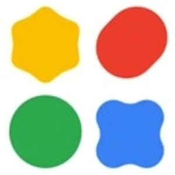

Trade Mark Journal No.2025/044 31 October 2025
WO0000001881606 (9,42)
Office of origin: United States of America

The mark consists of 4 different shapes, the yellow shape is a scalloped edge hexagon, the red shape is an oval, the green shape is a circle and the blue shape is a scalloped edge square. The yellow and red shapes are situated above the green and blue shapes.
The mark contains the colours yellow, red, green and blue.
The mark consists of 4 different shapes, the yellow shape is a scalloped edge hexagon, the red shape is an oval, the green shape is a circle and the blue shape is a scalloped edge square. The yellow and red shapes are situated above the green and blue shapes.
- Class 9
- Downloadable software and computer application software for mobile phones for creating machine learning solutions for cross-platform and on-device deployment; downloadable software and computer application software for mobile phones for converting, training, building, optimizing, and deploying natural language and machine learning models; downloadable software and computer application software for mobile phones for use in designing and developing computer software in the fields of cognitive computing, machine learning, learning algorithms, artificial intelligence, and data analysis; downloadable software and computer application software to assist users with and provide resources to integrate AI features into software applications; downloadable application programming interface (API) software for integrating AI into software applications.
- Class 42
- Providing temporary use of non-downloadable software and computer application software for mobile phones for creating machine learning solutions for cross-platform and on-device deployment; providing temporary use of non-downloadable software and computer application software for mobile phones for converting, training, building, optimizing, and deploying natural language and machine learning models; providing temporary use of non-downloadable software and computer application software for mobile phones for use in designing and developing computer software in the fields of cognitive computing, machine learning, learning algorithms, artificial intelligence, and data analysis; providing temporary use of non-downloadable software and computer application software to assist users with and provide resources to integrate AI features into software applications; application service provider featuring application programming interface (API) software for integrating AI into software applications.
Google LLC
Representative: FABRICIO VAYRA Morgan, Lewis & Bockius LLP, 1111 Pennsylvania Avenue, NW, Washington DC 20004-2541, UNITED STATES OF AMERICA